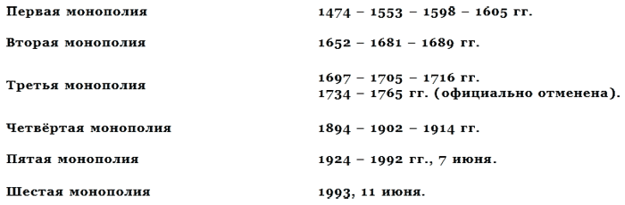

Что такое водка и ее история . Отношения государства к водке в России .

1386-1398 годы. Генуэзские купцы впервые привозят виноградный спирт (аквавиту) в Россию. Он становится известным при великокняжеском дворе, но не производит впечатления. Отношение к нему нейтральное, как к чему-то мелкому, частному, экзотическому, России и её народа совсем не касающемуся.
1429 год. В Россию вновь и в большом количестве поступают образцы аквавиты как из Флоренции (Италия), завезенные русскими и греческими монахами и церковными иерархами, так и генуэзские, из Кафы, транзитом провозимые через Московское государство в Литву. На сей раз это «зелье» признано вредным; следует запрет на его ввоз в Московское государство.
1448 — 1474 годы. В этот период происходит создание русского винокурения, изобретение гонки хлебного спирта из отечественного (ржаного) сырья. И в этот же период вводится монополия не только на производство и продажу хлебного вина, но и на все прочие спиртные напитки — мёд и пиво, ранее никогда не подвергавшиеся налогооблажению. Производство алкогольных продуктов с 1474 года становится прочной (фиксируемой документально) государственной, царской регалией.
1480 — 1490 годы. Великий князь ведёт спор с церковью с целью запретить ей производство алкогольных продуктов и тем самым ликвидировать брешь в государственной винной монополии, которую церковь подрывала уже самим фактом сохранения своих привилегий.
1505 год. Впервые отмечены факты экспорта русской водки в соседние страны (Швецию, Чудскую землю Эстонию, в земли Ливонского ордена).
1533 год. Основание в Москве первого «царёва кабака» и сосредоточение торговли водкой в руках исключительно царской администрации, по крайней мере, в Московском княжестве.
1590-е годы. Строгое предписание наместникам всех отдалённых от Москвы областей прекращать всякую частную торговлю водкой в корчмах и шинках, сосредоточивая её исключительно в царских кружечных дворах и кабаках. Производство и продажа водки сосредоточены в руках кабацких голов, и водку производят в самих царёвых кабаках. Кабацких голов, их помощников и целовальников (ларешных и рядовых) избирают общиной, они отчитываются в своей деятельности перед наместником области (края, наместничества) и Приказами — Московским, Новая четверть и Приказом Большого Дворца, то есть перед сырьевым (зерновым), финансовым и дворцовым ведомствами. Они сдают годовые доходы, «с прибылью против прежних лет», в остальном же полностью свободны от контроля. Эта система получает наименование «продажи питей на вере», а сами кабацкие головы выступают как подрядчики государства и одновременно его доверенные администраторы по фактическому осуществлению государственной винной монополии. Эта система продержалась до середины XVII века. В условиях России производство водки и торговля ею «на вере» привели к гигантской коррупции, взяточничеству, злоупотреблениям в области администрации и финансов, распространению воровства, преступности, пьянства — словом, именно к тем отрицательным явлениям, которые до сих пор считаются «специфически русскими», но которых не было в России до появления винокуренного производства и водки. Исторический опыт показал, что центральная власть, не обладающая жёсткими средствами контроля, не может фактически доверять своей же, «избранной народом», администрации, как только в руках этой администрации оказываются реальные материальные средства.
1648 год. Финансовые злоупотребления кабацких голов, резкое снижение качества хлебного вина (водки) из-за хищений сырья и фальсификации, рост взяточничества и разорительные последствия пьянства для народа, в том числе срыв посевных за несколько лет (в период пасхального пьянства), вызывают в 1648 году «кабацкие бунты» в Москве и других городах России, начинающиеся в связи с невозможностью городской (посадской) ремесленной голытьбы уплатить «кабацкие долги» и перерастающие в крестьянские волнения подгородного населения.
1649 — 1650 годы. Царь Алексей Михайлович созывает после подавления бунтов Земский собор, получивший наименование «Собор о кабаках», ибо главным вопросом на нём встает вопрос о реформировании питейного дела в России.
1651 — 1652 годы. Отменяется система откупов, вводимая в периоды крайней нужды правительства в деньгах и отдававшая целые области во власть алчных беспощадных откупщиков. Запрещается продажа водки в кредит, которая способствовала созданию «кабацких долгов» и закабалению людей. Уничтожаются частные и тайные кабаки, усиливается проповедь церкви против пьянства, пересматривается и сменяется штат целовальников за счёт изгнания явно коррумпированных элементов, восстанавливаются «демократические» выборы голов из людей «честных», укрепляется продажа «на вере», а не на фактической передаче её в откуп. Но всё это оказывается паллиативом. К 1659 году всё возвращается к тому же положению, как и было в 1648-м. Потребности государства в деньгах приводят к тому, что уже в 1663 году следует частичное введение откупов в ряде районов, где продажа водки «на вере» не приносит возрастающей прибыли. Финансовые соображения «рентабельности», «выгоды», «свободной конкуренции» ведут вновь к ужасному разгулу пьянства в России и широкому возникновению самогоноварения. Ибо две системы — казённая и откупная, сосуществуя и «соревнуясь», открыто обнаруживают весь цинизм голой наживы и полного пренебрежения к глубоким, коренным не только народным, но и государственным интересам, ибо разорению подвергнут трудовой люд, его энергия, являющаяся первейшим капиталом государства.
1681 год. Всё это заставляет правительство вернуться к восстановлению строгого, чисто казённого, государственного винокурения и к продаже питей (хотя и не столь прибыльной, как смешанная частно-государственная), введя при этом новый порядок заготовки водки: подрядную поставку водки казне по строго фиксированным ценам или в качестве товарного эквивалента налога, причём подрядчиками должны были выступать дворяне: помещики, крупные вотчинники, дававшие к тому же письменное обязательство («порученные записи»), что они в такой-то срок и в таком-то количестве поставят водку казне и тем самым не подведут государство. Такая система должна была неизбежно множиться, потому что правительство не обладало своими винокурнями и весь сданный ему в государстве спирт (водку) могло лишь хранить на государственных складах, так называемых «отдаточных дворах», где оно могло держать подчиненную непосредственно царю вооруженную военную охрану. Сборщиками и распорядителями этих товарных водочных подрядных поставок были назначены специальные чиновники — бурмистры, число которых было сравнительно ограниченно и которых, следовательно, было легче контролировать. Но и бурмистры не оказались способными противостоять искушениям, связанным с их должностью: они либо прощали за взятки недопоставки водки помещикам и тем самым нарушали интересы государства, либо обсчитывали и обманывали водкосдатчиков, нарушая интересы производителя и торгуя водкой «от себя» или разбазаривая складские запасы водки.
В 1705 году Пётр I, решительно склоняясь к тому, что главное в период Северной войны — это получить наивысшую прибыль для государства от продажи водки, причём прибыль деньгами, выплаченными заранее, а не собранными постепенно в результате розничной торговли водкой, переходит к откровенно откупной системе на всей территории России, сочетая её с казённой продажей и давая откупа наиболее энергичным, богатым и бессовестным, жестоким людям, исходя при этом из того, что они-то уж соберут, а если не соберут, то всё равно сдадут ему на ведение войны и оснащение флота заранее установленную для них априори откупную сумму. Но эта система держится только десять лет, ибо, почувствовав, что народ далее её не вынесет, Пётр I в 1716 году вводит свободу винокурения в России и облагает всех винокуров винокурной пошлиной, исчисляемой и с оборудования (кубов), и с готовой продукции (выкуренной водки). С этого момента винокурение превращается в одну из отраслей земледелия, ибо им занимаются все, кто производит зерно.
В 1765 году правительство Екатерины II вводит привилегию винокурения для дворянства, освобождая его от всякого налогообложения, но устанавливая размеры домашнего винокуренного производства в соответствии с рангом, должностью, званием дворянина. Так, князья, графы, титулованное дворянство получают возможность производить больше водки, чем мелкопоместное дворянство, что, впрочем, вполне согласуется с их реальными экономическими возможностями. Вместе с тем привилегия винокурения и размеры производства тесно связаны и с чином дворянина-винокура, косвенно поощряя тем самым дворянство к государственной службе.
В то же время все другие сословия — духовенство, купечество, мещанство и крестьянство — лишены права на винокурение и должны, следовательно, покупать водку для своих нужд, произведённую на казённых винокурнях. Эта система приводит к тому, что домашнее дворянское винокурение и технически и качественно достигает высокого развития, высокого класса. Оно нисколько не конкурирует с казённым, не влияет на него, а мирно сосуществует с ним, ибо рассчитано на удовлетворение домашних, семейных потребностей дворянского сословия. И оно не «давит» на рынок водки в стране, отданный в полное владение государства (казны), которое рассчитывает свою продукцию на все прочие сословия, кроме дворянства. Это даёт возможность казённому производству водки, не испытывая конкуренции, держать качество продукции на среднем уровне, обеспечивающем и доход государству, и полную гарантию от убытков и от «нервотрепки» конкурентной борьбы. Кроме того, такая система даёт возможность государственному аппарату «почить на лаврах», не испытывая никаких проблем.
В 1781 году развитие этой системы приводит к созданию казённых питейных палат, которые обязаны заготавливать определённое количество водки в год в определённых районах на основе сложившейся практики её потребностей в данной местности. При этом указ 1781 года не предписывал, как и каким путём питейные казённые палаты будут вести эту заготовку годового запаса водки: они могли заказывать её на казённых заводах, могли и закупать где угодно на стороне, если казённые заводы не успевали обеспечить своим продуктом данный район. Как обычно в России, сочетание двух разных систем, применяемое центральной властью ради гибкости функционирования государственной машины, на практике привело к новому кризису, к нарушению установившегося спокойного, чёткого порядка.
Казённые палаты стали постепенно всё чаще и чаще искать подрядчиков на поставку водки на стороне, среди своих друзей, знакомых, лиц, желавших поднажиться на казённых заказах. Это привело вновь не только к взяточничеству и коррупции, но и к тому, что постепенно возобладала только подрядно-откупная система, в то время как казённые винокурни постепенно заглохли и почти свернули свою деятельность, ибо им государственная казённая палата давала всё меньше и меньше заказов.
С 1795 года заготовка водки казной практически исчезает вовсе, единой системой правительственного контроля остаётся откуп. Особенно он господствует уже с 1767 года вдали от правительственного контроля — в Сибири, но к концу века подбирается и к самому Петербургу. Причиной, по которой государственная власть буквально просмотрела это явление, послужило процветающее в XVIII веке домашнее дворянское винокурение: водки было достаточно и у дворянства, и при дворе, кроме того, помещики снабжали, разумеется, водкой и собственных дворовых людей и крестьян, не желая, чтобы доход уплывал на сторону.
Купечество, устраиваясь подрядчиками казённого вина, также обеспечивало заодно и себя водкой. Непосредственно не производившим водку оставалось только мещанство, но оно вполне было удовлетворено казённым товаром. Словом, рынок был насыщен водкой, и потому об источниках её поступления не задумывались. На нарушение предписаний, на неизбежную при этом убыточность доходов для казны смотрели сквозь пальцы, ибо лично чиновников эта убыточность не касалась. А правительство Екатерины II никогда не вступало в конфликт с аппаратом и с дворянским сословием. И когда Павел I, вступив на престол в 1796 году, решил навести порядок и обеспечить интересы государства, то он вызвал этим, как известно, резкое возмущение дворянства и был убит, что отбило охоту у его преемника и сына Александра I вмешиваться в этот щекотливый вопрос, связанный с дворянскими привилегиями и с не меньшими неписаными привилегиями растущего класса русского купечества, которое, фактически «втихую» захватив в свои руки государственную монополию на водку в виде откупов, превратило откупную систему в источник своего непрерывного и бесхлопотного обогащения. Так, благодаря водке русское купечество уже в истоках своего существования стало привыкать не к деятельному соревнованию и жёсткой, заставляющей думать и считать каждую копейку конкуренции, а к паразитированию и наживе на основе злоупотреблений, воровства из казны, фальсификации и ухудшения качества продукта, поскольку именно водочные откупа предоставляли все эти «редкие» возможности.
Лишь в 1819 году, после разорительной Отечественной войны, инфляции русского рубля и бумажных ассигнаций, правительство Александра I, следя за поступлением в казну своей доли доходов, наконец обратило внимание на то, что откупная система, которая в XVII веке привела к разорению потребителя водки — народа, в XIX веке разорила уже казну, так как потребитель не находился в зависимости от откупщиков при допуске домашнего винокурения или сам следил и оборонял свои интересы, а правительство (казна) об этом контроле не пеклось и позволило откупщикам наживаться на обмане казны. Короче говоря, откупщики брали своё в любом случае — либо с потребителя (при бдительности казны), либо с казны (при независимости потребителя), но откупная система в любом случае строилась на злоупотреблениях и лишь менялась при этом теряющая, терпящая ущерб сторона.
В 1819 году правительство Александра I ввело поэтому строгую государственную монополию. Исключение было сделано лишь для отдалённой Сибири, где правительство всё равно было не в силах бороться со злоупотреблениями откупщиков.
Отныне государство брало на себя целиком производство водки и её оптовую продажу, а розницу отдавало в частные руки. Не обладая торговыми точками, государство не могло ещё ввести полной монополии в XIX веке. Кроме того, предупреждая спекуляцию государственной водкой, правительство установило твердую цену на неё во всей империи — по 7 руб. ассигнациями за ведро. Введение казённой монополии на водку сразу же пополнило государственную казну — за год доходы от водки увеличивались почти на 10 млн рублей (с 14 до 23 млн руб.), именно на столько обсчитывали ежегодно государство откупщики, то есть за период с 1801 по 1820 год они недоплатили казне почти 200 млн рублей! Но лишь только выявилось подобное положение, как розничные виноторговцы попытались взять реванш. Они также стали недоплачивать государству, воруя и фальсифицируя продукт и в конце концов доведя свои выплаты в казну до 12 млн рублей в 1826 году. В целом и потребление водки стало падать в России, ибо наличие дворянского домашнего винокурения сдерживало и распространение пьянства, и спрос на худшую по качеству казённую водку. Рынок был насыщен товаром, и в этом случае приходилось страдать уже производителю, а не потребителю. Но поскольку в России любой производитель не желал зарабатывать прибыль путём повышения качества товара, путём честной конкуренции, то основные производители водки — помещики потребовали отмены конкурирующей казённой монополии.
В 1826 году новый царь Николай I, желая после подавления восстания декабристов сделать примирительный жест в отношении дворянства и укрепить положение монархии, сразу же с января 1826 года восстанавливает частично откупную систему, а с 1828 года полностью отменяет государственную монополию на водку.
Показательно, что так поступил жёсткий царь, всюду укреплявший государственную систему и администрацию. Казалось бы, в этом было заложено противоречие. Но ничего парадоксального в этом не было: правитель, желавший упрочить своё положение в государстве, обычно отменял монополию на водку, причём это были всегда не самые слабые, а, наоборот, самые сильные государи: Пётр I, Екатерина II, Николай I.
Секрет этой тактики состоял в том, что для всех них важен был политический выигрыш, а не прибыль. Они были великими политиками, а не купцами, не «бакалейщиками». И они готовы были заплатить водкой за политический выигрыш, за политическую стабильность. Такова была их стратегия. Однако цена такой платы была разорительной не только для государства, казны, но и непосредственно для народа — как для его кармана, так, в ещё большей степени, для его здоровья и души. Откупная система, принося гигантскую прибыль кучке алчных негодяев, была всегда, везде и всеми ненавидима, ибо вела к разорению, к нищете, к безудержному росту пьянства и одновременно к ухудшению качества водки и её разрушительному воздействию на здоровье населения. Не составила исключения и николаевская откупная система, введённая в 1826 году. Уже спустя четверть века, в 1851 году, она обнаружила все свои отрицательные качества, особенно усилившиеся в душной, реакционной атмосфере тогдашней России, где подавляли любую критику любых мероприятий и откупная система могла держаться буквально на штыках и на забитости населения.
Народ, несмотря на то, что был втянут в пьянство, насколько мог, старался лишь в вынужденных случаях пользоваться откупной водкой. Доходы от водочных поступлений стали неуклонно снижаться к середине XIX века.
Между тем правительство Николая I крайне нуждалось в деньгах после подавления революции 1849 года в Венгрии и в преддверии намечаемого широкого железнодорожного строительства в империи и подготовки к Крымской войне, к обновлению устаревшего парусного Балтийского флота.
В этих условиях в период с 1847 по 1851 год постепенно в разных районах страны совершается переход к акцизно-откупной системе, когда государство монопольно производит водку на своих казённых винокурнях и продаёт её откупщику по твёрдой цене в надежде, кроме того, получить с него ещё и дополнительную прибыль, которая создается из суммы, полученной откупщиком в результате розничной торговли. Но поскольку откупщики, естественно, стремились нажиться как можно больше, получив не только розничную надбавку для казны, но и свою прибыль, то эта система привела к невероятным злоупотреблениям и вызвала сильнейшее народное недовольство. Вот почему сразу после отмены крепостного права в России в общем русле хозяйственных и социальных реформ была проведена и решительная отмена ненавистной откупной системы. Она была заменена в 1863 году введением в России акцизной системы[124]. Показательно, что осуществление этой меры было затянуто почти на полтора десятка лет, ибо откупщики не были намерены уступать свои позиции добровольно. Даже когда население устраивало им бойкот, даже когда против них объединялись трактирщики, они яростно и всеми средствами боролись за свои «права».
Однако отмена крепостного права, открыв дорогу развитию капитализма в России, заставила царское правительство не считаться с интересами и требованиями какого-либо одного класса, а действовать согласно законам капитализма, законам рынка. Вот почему выбор был сделан не в пользу введения государственной монополии, а в пользу акцизной системы, как приноровленной к капиталистическому хозяйству и действующей в странах Западной Европы, на которую смотрели как на образец.
Но акцизная система «не пошла» в России, она провалилась как раз с точки зрения своей экономической эффективности и с точки зрения влияния на нравственность общества. Почему? Во-первых, она сразу сильно понизила цены на спирт и водку, и питейный доход казны сразу упал со 100 млн рублей до 85 млн рублей. Во-вторых, не менее резко снизилось качество водки, ибо при низких ценах возросло желание производителей не проиграть в барыше, что вызвало многочисленные фальсификации, замену зернового сырья картофельным и как результат — массовые отравления и смертельные случаи. В-третьих, пьянство, сократившееся в период борьбы народа с откупной системой, вновь достигло умопомрачительных размеров, причём не в виде роста объёмов потребляемой водки, а по своим социальным и медицинским последствиям, поскольку дешёвая низкосортная водка «для народа», бесконтрольность «новой», «современной» рецептуры отдельных водочных фирм привели в целом к катастрофическому росту алкоголизма, к массовому появлению хронических алкоголиков, чего в России до эпохи капитализма при имевшемся многовековом пьянстве всё же не наблюдалось.
Чистая русская ржаная водка предотвращала глубокие, органические и патологические изменения в организме.
С 1868 года, спустя всего пять лет после начала действия акцизной системы, появляются попытки реформировать её, внести исправления в те перекосы, которые появились в социальной сфере. Все эти попытки реформ, как это часто наблюдалось в истории России второй половины XIX века, сильно отдают «интеллигентством», «идеализмом» и направлены не на суть, а на частности. Так, предлагали «демократизировать» акцизную систему, «регулировать» её, введя ограничение числа питейных домов, передачу продажи сидельцев, предоставление права сельским сходам запрещать в своём селе, волости продажу водки и т. п. Но это были прожекты, не могущие дать никаких реальных положительных результатов, неспособные создать правильной, разумной организации потребления водки в большом государстве.
В 1881 году совещание министров решило провести более существенные изменения: заменить кабак трактиром и корчмой, то есть точками, которые бы торговали не только «голой» водкой, но и где к водке можно было бы получать еду, закуску, что, несомненно, вело бы к меньшему проявлению опьянения. Вместе с тем впервые в России был поставлен вопрос о том, чтобы разрешить продажу водки на вынос порциями меньше ведра, то есть ввести розничную бутылочную торговлю водкой. До 1885 года водку продавали на вынос только ведром, а бутылки существовали лишь для иностранных виноградных вин, которые в этих бутылках и поступали из-за границы. Задачи перехода на бутылочную торговлю водкой, ставившие своей целью разрешить людям пить водку в домашних условиях, и не столь много в один присест, наталкивались на такое препятствие, как отсутствие в России развитой и массовой стекольной промышленности. Всего сто лет тому назад водку в нашей стране продолжали пить так же, как и в средневековье: из-за отсутствия тары — лишь в определённом месте — трактире, и сразу большой мерой — не менее чарки.
В 1882 году в результате обсуждения «водочного вопроса» на местах в русских губерниях большинство «провинциалов» высказалось решительно за введение строго регулируемой государственной монополии на водку. 15 лет капиталистического эксперимента ничего не дали, кроме ухудшения и разброда.
В 1885 году была проведена частичная реформа акцизной системы по рекомендациям правительства. Но, как остроумно заметил профессор В.А. Лебедев, «кабак исчез только со страниц Питейного Устава, он возродился в форме трактира», и ничего не изменилось. Не помогло уже и запоздавшее и крайне ограниченное (лишь в обеих столицах) введение бутылочной торговли. Мастеровой люд, купив четвертинку водки, тут же выпивал её у дверей лавки залпом лишь только потому, чтобы отдать обратно посуду и получить её стоимость!
Отсутствие элементарной культуры потребления водки у народных масс, порождённое многовековым существованием кабака без еды, препятствовало любым реформам, направленным на ограничение потребления водки в России. Вот почему после провала реформы акцизной системы и полной неспособности акцизных установлении регулировать производство и потребление водки в стране широкая общественность, и прежде всего учёные во главе с Д.И. Менделеевым, а также ряд государственных деятелей и видных юристов выступили в поддержку введения в России государственной водочной монополии.
Введение монополии разрабатывали серьёзно, и она была задумана не как одноразовая указная акция, а как глубокая реформа, проводимая осмотрительно по этапам, на протяжении восьми лет.
1894 — 1902 годы — последовательно по регионам России — вначале в столицах, а затем на окраинах, сперва в европейской части страны, затем в азиатской.
В 1902 году государственная водочная монополия вступила в силу по всей стране. Основные задачи, которые она перед собой ставила, сведены к трём пунктам:
1)полностью изъять производство и торговлю водкой в стране из частных рук, полностью ликвидировать подпольное самогоноварение, сделав его ненужным и невыгодным;
2)высоко поднять качественный стандарт водки, сообразуясь с историческим опытом и достижениями русского винокурения и с новейшими техническими и научными достижениями промышленности, гигиены и органической химии;
3)не ставя искусственной и исторически преждевременной задачи ликвидировать пьянство как социальное зло, сделать всё возможное для того, чтобы привить русскому народу культуру потребления водки и других алкогольных напитков.
С этой целью наряду с достижением высокой химической чистоты продукта, снижающей его вредные последствия для здоровья, всемерно улучшать условия общественного потребления, пропагандировать домашнее потребление в достойной человека обстановке, распространять знания о применении водки с разными целями и в разных ситуациях, научить смотреть на водку как на рациональный элемент застолья, а не как на средство сильного опьянения или забвения.
Все эти положения, как и технология нового производства водки, были разработаны комиссией во главе с великим русским химиком Д.И. Менделеевым. Водочная монополия действовала недолго — фактически на протяжении менее десяти лет.
В 1902 — 1903 годах она лишь вступила, по существу, в силу впервые по стране, и её результаты не смогли сразу проявиться.
В 1904 — 1905 годах, в период русско-японской войны, фактически был введён запрет на торговлю водкой в ряде регионов страны.
В 1905 — 1907-м — в годы первой русской революции ограничения на водочное производство и торговлю сохранялись или действовали частично.
Лишь в 1906-1913 годах, всего семь лет подряд, водочная монополия осуществлялась во всем своём объёме и дала ряд положительных результатов по сокращению по крайней мере внешних проявлений пьянства. Торговля водкой была упорядочена так, что лишь в столицах и крупных городах её вели с 7 часов утра до 22 часов вечера. В сельской местности её завершали осенью и зимой в 18 часов, а весной и летом продлевали до 20 часов. Во время общественных мероприятий — выборов в Думу, общинных собраний (сходов), как деревенских, так и волостных, торговля водкой была строго запрещена. Усилены были также уголовные наказания за тайное изготовление самогона. Напомнить обо всём этом необходимо, поскольку люди не знают истории данного вопроса, и введение аналогичных ограничительно-регулирующих мер, скажем, в 30-х или 60-70-х годах, было воспринято большинством людей как некая особая выдумка советского правительства, которую якобы никогда не применяли в дореволюционную эпоху.
2 августа 1914 года правительство России издало постановление о прекращении продажи водки на период войны (1914 — 1918 гг.) и о сосредоточении всего производства этилового спирта для технических нужд фронта и медицинских целей.
В декабре 1917 года советское правительство продлило запрет на торговлю водкой на время войны и революции, а затем в июле 1918-го ещё раз приняло постановление о запрете производства самогона и торговли водкой на период гражданской войны и иностранной интервенции.
26 августа 1923 года ЦИК СССР и СНК СССР издали совместное постановление о возобновлении производства и торговли спиртными напитками в СССР.
С января 1924 года это постановление фактически вступило в силу.
С начала действия постановления производство советской водки было поставлено и всё время находилось на высоком научно-техническом уровне. Все учёные-химики, занимавшиеся изучением физико-химических показателей русской водки, за исключением умершего в 1907 году Д.И. Менделеева, остались работать в Советской России и внесли свой вклад в дальнейшее совершенствование русской водки советского производства. Это были академик Н.Д. Зелинский, профессора М.Г. Кучеров, А.А. Вериго, А.Н. Шустов и А.Н. Гра-цианов.
Так, М.Г. Кучеров ещё до революции обнаружил в столовом хлебном вине (водке), вырабатываемом заводом П. Смирнова в Москве, поташ и уксуснокислый калий, придававшие смирновской водке своеобразную мягкость, но вредно влиявшие на здоровье. Поэтому он предложил сделать на советских спирто-водочных заводах добавку к водке питьевой соды, которая, сообщая водке «питкость», была не только безвредна, но и полезна для здоровья. А.А. Вериго предложил надёжный и точный метод определения сивушных масел в ректификате и ввёл двойную обработку водки древесным углем.
В 1924 году по предложению А.Н. Шустова для обработки сортировки (водно-спиртовой смеси) стали использовать активированный уголь «норит».
В 1937 году впервые были введены унифицированные рецептуры советских водок, расширен их ассортимент.
В 1938 — 1940 годах водки вырабатывали практически только из зерна (рожь, пшеница, ячмень, овес), и перед ректификацией спирт разбавляли водой и очищали только берёзовым и липовым углем, который до Второй мировой войны имелся в СССР в достаточном количестве. Для приготовления столовых водок употребляли спирт высшего качества двойной ректификации, так называемый «прима-прима», причём его отбирали почти так же, как и в XVIII веке, — не более 60%, используя новейшую аппаратуру. Таким образом, в довоенное время в СССР поддерживали высокий мировой стандарт водки, вводили дополнительные меры для обеспечения высшего качества продукта.
В 1941 — 1944 годы на время Второй мировой войны производство водки не было прекращено, но оно сократилось с 90, 5 млн декалитров (1940 г.) до 20 — 18 млн декалитров (1944 г.),
В 1948 году производство водки было восстановлено и последовали новые технологические улучшения: на всех заводах был внедрён способ динамической обработки сортировок активированным углем, введены модернизированные песочно-кварцевые фильтры вместо менее эффективных керамических, умягчение воды стали производить катионовым способом.
В 1967 году был утверждён новый стандарт на ректифицированный спирт, ещё более ужесточивший нормы содержания примесей — лишь тысячные доли процента — 1-2 промилле.
В 1970 — 1971 годы введены автоматизированная линия непрерывного приготовления сортировок и очистка сортировок активным углем в псевдокипящем слое. Расширен ассортимент водок: к «Московской особой», «Столичной» и «Экстре» добавились ещё «Посольская» и «Сибирская».
В 1986 году в качестве первого крупного мероприятия «перестройки» было принято по инициативе и под давлением М.С. Горбачева правительственное постановление о борьбе с пьянством, результатом которого явился демонтаж ряда ликёро-водочных заводов или их переоборудование в предприятия безалкогольных напитков. Это решение, принятое без должной исторической и экономической проработки, поставило в тяжёлое положение отечественную спирто-водочную промышленность, нанесло ей материальный урон и вызвало широкое недовольство народа, не говоря уже о тех неудобствах бытового и общественного характера (очереди за водкой, самогоноварение, спекуляция водкой и её суррогатами), которые были следствием этого решения.
В 1990 году оно было признано ошибочным, и начался трудный процесс восстановления репутации и престижа отечественного винокурения. Сохранившаяся часть спирто-водочных предприятий работает ныне со значительной нагрузкой, усугубляемой нехваткой высокосортного сырья и в не меньшей степени утратой старых, опытных кадров в этой отрасли, подвергнутой расформированию.
В 1990 — 1992 годах отрасль переживала кризис восстановительного периода, что привело к снижению уровня производства, а также к ухудшению качества продукции, не имевшего места за все предыдущие 60 лет.
В 1992 году произошло эпохальное событие в истории производства водки в России — Указ президента Б. Н. Ельцина, отменявший государственную монополию на водку (т.е. на её производство, ввоз, продажу, её объёмы и цены). Таким образом, пятая российская монополия или первая советская монополия на водку просуществовала 68 с половиной лет и была самой продолжительной и эффективной в стране после первой царской монополии 1474-1605 гг., введённой Иваном III и упразднённой фактически в период Смутного времени во время польской интервенции и общего потрясения основ государственной власти в стране, которая практически десяток лет жила без определённого центрального правительства.
С середины 1992 года в России вместо монополии была введена полная свобода производства и торговли винно-водочными изделиями любым частным изготовителем или продавцом на основе получения ими специального разрешения, выдаваемого органами исполнительной власти, т.е. на основе лицензий.
В 1992 — 1993 годах эти «новшества» сразу же привели к следующим последствиям:
1. К появлению на рынке низкопробной, фальсифицированной, а порой и вовсе опасной (ядовитой) продукции вместо прежде чётко установленного государственного стандарта качества водки.
2. К быстрому распространению и росту самогоноварения, в том числе из непроверенного, некачественного сырья, как для домашних, так и для торговых целей, причём более 98% самогонщиков вели, как правило, подпольный бизнес, чтобы не подвергаться взиманию государственных налогов.
3. К наводнению российского рынка иностранными псевдоводками и другими видами крепких алкогольных напитков, в том числе и необработанных (т.е. «чистый» спирт, спирт-ректификат, спирт-сырец и др.). Все эти товары резко отличались от водки в силу того, что изготавливались не по русской водочной технологии, а по своей собственной, не имеющей аналогии с водочной. Это вело к тому, что сдвиги в качестве товара даже не поддавались расчёту, т.е. наряду с фальсифицированным товаром на рынке появлялся товар со «скрытой фальсификацией», не поддающейся ни контролю, ни элементарным государственным санкциям.
4. К резкому повышению стоимости водки в 1992 году в 10-15 раз и в 1993 году — в 400-650 раз по сравнению с первоначальной производственной стоимостью на государственных предприятиях.
5. К ухудшению финансового положения государства, лишившегося своей самой доходной и самой верной (постоянной, стабильной) фискальной позиции в бюджете.
6. К официальному (формальному, бумажному) сокращению уровня потребления водки, поскольку официальная статистика не могла учитывать ни уровня нелегального производства, ни уровня потребления самогона в стране. Это приводило к тому, что уровень пьянства был искусственно (по статистике!) занижен и не дал правительству вовремя увидеть опасность невиданного роста пьянства в стране. Так, по статистическим данным в 1992 году уровень потребления водки оказался самым низким в стране за всю историю водки — только 4, 5 литра в год на человека.
7. На самом деле эти данные означали лишь то, что катастрофически снизилась доля водки, имеющей государственные гарантии качества и лишённой вредных примесей, и что, в основном, в стране потребляют в невиданных дотоле количествах опасные для здоровья в прямом смысле разновидности крепких спиртных напитков. Это в свою очередь привело к росту числа отравления спиртным с летальным исходом. В 1992 году число таких отравлений возросло только по сравнению с 1991 годом в 1, 6 раза, с 16, 7 тыс. чел. до 26, 2 тыс. чел., а по сравнению с 1960 годом число таких случаев возросло в 125 раз!
8. Обозначился и резкий разнобой в водочных ценах в разных регионах России, в то время как до тех пор в течение 70 лет цена на водку на всей территории страны была абсолютно одинаковой, единой.
9. Всё это вместе взятое содействовало и росту различных преступлений (от бытовых до финансовых), связанных с водкой, а также общему разложению: водка стала доступной для детей, подростков, женщин, чего не было никогда прежде при пятой монополии, как из-за прямых запретов, так и из-за сохранения традиций.
10. Вместе с тем не произошло существенного роста производства водки в стране, ибо большую часть потребностей стали покрывать импортом заграничных спиртных напитков или подпольным самогоноварением. Подводя итоги этого развития всего за один год, лондонская «Тайме» писала: «Отмена монополии на водку является политическим самоубийством для страны, где экономические и иные трудности вызывают у народа желание утопить их в вине» («Файненшиал таймс», 6-7 марта 1993 г.).
В 1993 году вследствие ставших явными не только для внутреннего, но и для зарубежного наблюдателя отрицательных последствий отмены монополии на водку президент России Б. Н. Ельцин отменил свой Указ от 7 июня 1992 г. и издал новый Указ № 918 от 11 июня 1993 г., вводивший монополию на водку в России. Это была, таким образом, шестая российская монополия, если считать их по порядку введения с конца XV века.
Отныне восстановлена вновь во всём её прежнем объёме пятая монополия на производство, торговлю и употребление водки.
Однако практически в условиях середины 1993 года правительство, исполнительная власть оказались не в состоянии контролировать исполнение данного Указа, встретив к тому же оппозицию со стороны сильно расплодившейся массы нелегальных производителей самогона, привыкших за год отсутствия монополии к баснословным барышам и не желавших расставаться с ними.
Со стороны же общественного мнения, в том числе и со стороны прессы. Указ был встречен пессимистично вследствие неверия людей в то, что власти имеют достаточно сил добиться его выполнения.
Обо всей «водочной политике» последнего десятилетия, начиная с крайне дилетантского эксперимента М.С. Горбачева, российская пресса обычно высказывается следующим образом: «Подобные бумаги (о водке) сочиняют люди, умеющие разве что поднять стакан», т.е. абсолютно некомпетентные в вопросах истории водки, не знающие её великое значение и власть в экономике, политике и культуре (или бескультурье?) страны и народа.
То, что общественность выражает сомнение и неверие в компетенцию властей вести верную водочную политику, вполне понятно и объяснимо на фоне того, что предпринималось по этому вопросу за истекшее десятилетие. Однако если подходить объективно и оценивать Указ № 918 с точки зрения истории водки в России, то ясно, что восстановление водочной монополии — единственно верная, правильная мера, направленная на восстановление порядка в стране. Жаль, что монополия была отменена, вдвое жаль, что её восстановление так запоздало, хотя отрицательные последствия были видны уже через месяц после отмены монополии. Но, как говорят, лучше поздно, чем никогда. Поэтому не может быть двух мнений относительно введения водочной монополии: мера эта позитивная, проверенная на протяжении всей истории страны, и её следует твердо держаться.
Резюмируем всё вышеизложенное. Сколько же времени существовала водочная монополия в России на протяжении её истории?
В советских справочных и исторических работах вопрос о существовании водочной монополии в России и СССР, как правило, совершенно не затронут. В БСЭ-1 и БСЭ-2, СИЭ в статьях «Винная монополия» стереотипно с 1930 года по настоящее время повторяется фраза, что винная (водочная) монополия в России существовала «в течение 17 в. и в первой половине 18 в.» без указания начальной даты[125]. Эти данные абсолютно неверны. Ссылка на XVII век как на начало монополии сделана на основании того, что в 1649 году был установлен новый свод законов страны — «Уложение царя Алексея Михайловича», в котором впервые целая глава — 25-я — была посвящена целиком предписаниям, связанным с винокурением и виноторговлей.
Таким образом, этот документ первым из дошедших до нас актов фиксирует государственные постановления, касающиеся хлебного вина (водки), его производства и торговли им, а также влияния его употребления на общественную жизнь и разные сферы государственного хозяйства.
Однако первая монополия на водку была установлена, как мы выяснили, в 70-х годах XV века, приблизительно в 1474 — 1478 годах, и продолжалась до 1553 года, то есть 80 лет без всяких изменений и изъятий. Лишь в 1553 году Иван IV допустил некоторые частичные изъятия из действия монополии — для опричников и некоторых воевод отдалённых и пограничных областей, заменив для этих категорий монополию арендой монополии, то есть откупом, с той лишь разницей, что это был не обычный договорный откуп, а аренда «на веру». Но и при этих изъятиях казённая монополия на водку в значительной части государства всё равно сохранялась до 1603 — 1605 годов, хотя её значительно потеснили откупщики. При Борисе Годунове в 1598 — 1604 годах винная монополия государства вновь была ужесточена.
Формально монополию не отменяли и в начале XVII века, но фактически она исчезает в период крестьянской войны Ивана Болотникова и польско-шведской интервенции, то есть с 1605 по 1613 год. И восстановить её по-настоящему царям новой династии — Романовым не удалось вплоть до 1652 года.
Именно с этих пор, с 1652 года, а не с 1649 года, то есть не тогда, когда было написано «Уложение», а после так называемого Собора о кабаках введена новая строгая государственная монополия на водку, по счёту — вторая. Она сохранена до тех пор, пока существует крепкий государственный аппарат. В период же неустройства конца XVII века (начавшихся споров из-за престола между Софьей и её братьями Петром и Иваном V, из-за отмены патриаршества, из-за петровских реформ и связанных с ними бунтов и народных волнений) монополия просто-напросто сходит на нет, как и всегда в истории России, как и в начале XVII века в сходной ситуации.
Государственная монополия на водку — это всегда признак крепкой, твёрдой, стабильной власти в стране и государственного спокойствия. Как только что-то нарушается во внутренней политике, в её стабильном, сдержанном течении, так водка «вырывается из-под контроля». И наоборот, как только водке дают возможность «вырваться из-под контроля», так во внутренней политике начинаются всевозможные неустройства. Отсюда ясно, что водка — хороший индикатор (показатель) состояния общества.
Именно чтобы покончить с нестабильностью, Пётр I вновь вводит монополию на водку на короткое время — примерно на 18 — 20 лет, как только он воцаряется один безраздельно, то есть 1696-1697 год, и она держится в период Северной войны, по крайней мере до того, пока не наступает её завершающая стадия, когда становится очевидной полная победа России над Швецией. Уже с 1716 года начинается постепенное «общипываниё» монополии, то есть этой третьей монополии на водку (1697 — 1734 гг.), и переход к иным формам замены государственного надзора за винокурением, пока Екатерина II не отменяет её полностью в 1765 году, передавая право на винокурение дворянству как сословную привилегию.
Попытки Павла I в 1798 — 1800 годах и Александра I в 1819 — 1825 годах ввести государственную монополию на водку были сорваны дворянством и буржуазией. Николай I и его преемники (Александр II и Александр III) не решились изменить коренным образом сложившийся порядок и сохраняли бесхлопотную для государственного аппарата и разорительную для народа откупную систему.
Лишь на пороге XX века, в 1894 — 1902 годах, вновь введена полная государственная монополия на водку, то есть Четвёртая монополия, которая вступает в силу в 1902 году на всём пространстве империи, исключая Царство Польское и Финляндию, где действуют свои законы. Таким образом, Четвёртая монополия на водку формально просуществовала всего 12 лет — до 1914 года.
Советское правительство совершенно запрещает производство водки в 1917 — 1923 годах. С 1924 года вводится пятая, российская, или первая советская, монополия на водку, существовавшая беспрерывно, включая период Великой Отечественной войны 1941-1945 годов, вплоть до 1992 года, до Указа Б.Н. Ельцина, и вновь введена в 1993 году.
Различные постановления, регулирующие новые правила продажи водки, и резкое сокращение её производства в 19861990 годах привели к нарушению внутриполитического порядка и стабильности, но юридически ничего принципиально не изменили в существовании государственной монополии на производство водки.
Водочные монополии и их этапы (спады)

Как видим, разрывы между периодами действия монополии немалые, причём самый значительный в XVIII — XIX веках — 130 лет. Фактически периоды полного действия монополий были всегда крайне кратковременными. Лишь первая монополия (1474-1553 гг.) длилась непрерывно почти 80 лет. Но её второй этап (при Борисе Годунове, 1598-1605 гг.) продолжался уже всего 7 лет. Вторая монополия (1652 — 1681 гг.) — 29 лет, третья монополия (1697 — 1716 гг.) — 19 лет, а Четвёртая монополия (1902 — 1914 гг.) фактически осуществлялась 12 лет, и пятая (советская) осуществлялась 68, 5 лет. Один год — с 7 июня 1992 года по 11 июня 1993 года — Россия была без водочной монополии со стороны государства, что привело к росту пьянства, преступности и к падению доходов государства. Это вынудило правительство пересмотреть своё решение и восстановить традиционный для России порядок вещей — ввести водочную монополию.